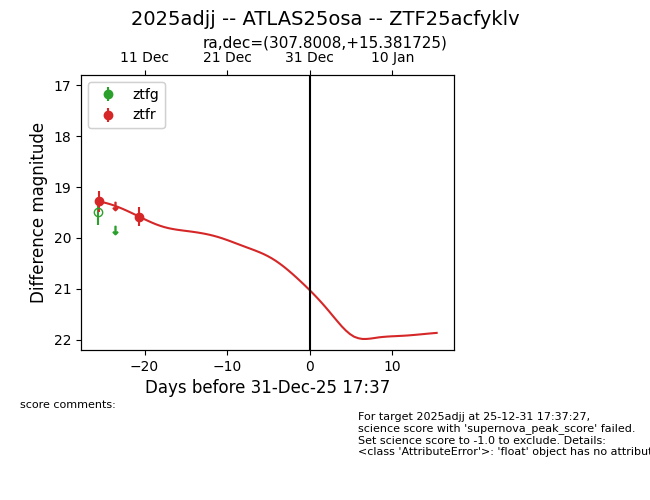
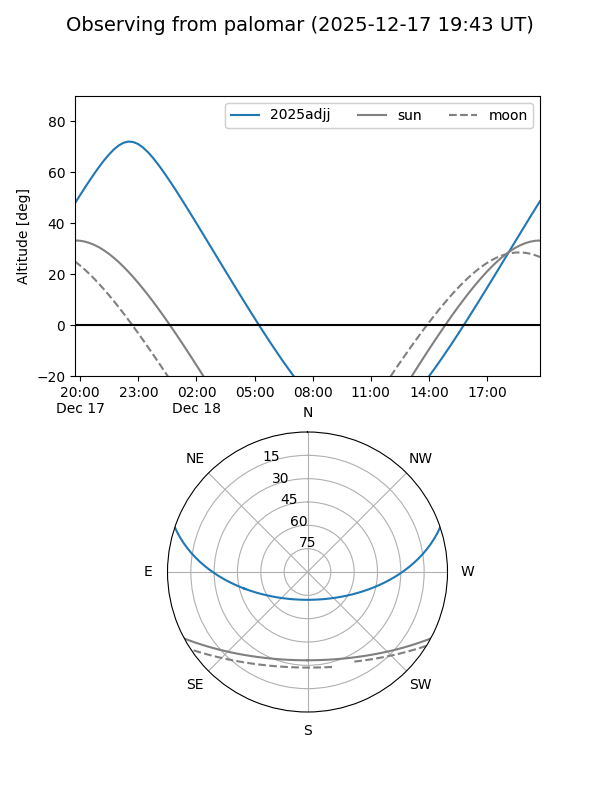
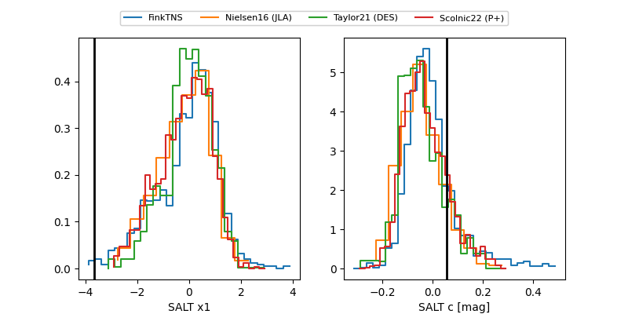

2025adjj
Target 2025adjj at 2025-12-18 11:17
Aliases and brokers:
FINK: fink-portal.org/ZTF25acfyklv
Lasair: lasair-ztf.lsst.ac.uk/objects/ZTF25acfyklv
ALeRCE: alerce.online/object/ZTF25acfyklv
TNS: wis-tns.org/object/2025adjj
YSE: ziggy.ucolick.org/yse/transient_detail/2025adjj
alt names
ZTF25acfyklv (ztf,fink_ztf)
2025adjj (tns,yse)
ATLAS25osa (atlas)
Coordinates:
equatorial (ra, dec) = 307.8008,+15.38173
equatorial (HMS+DMS) = 20:31:12.18,+15:22:54.21
galactic (l, b) = (58.6697,-13.94003)
Photometry
last ztfr=19.58
2 ztfr detections
Lightcurve

Visibility


Additional plots
